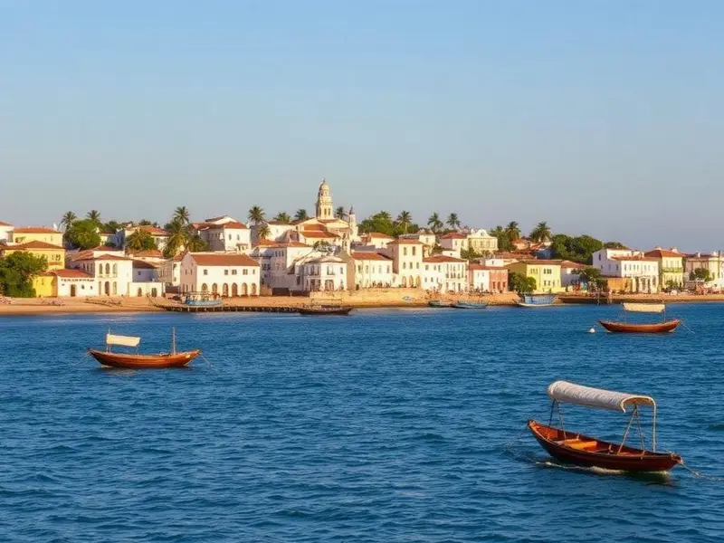
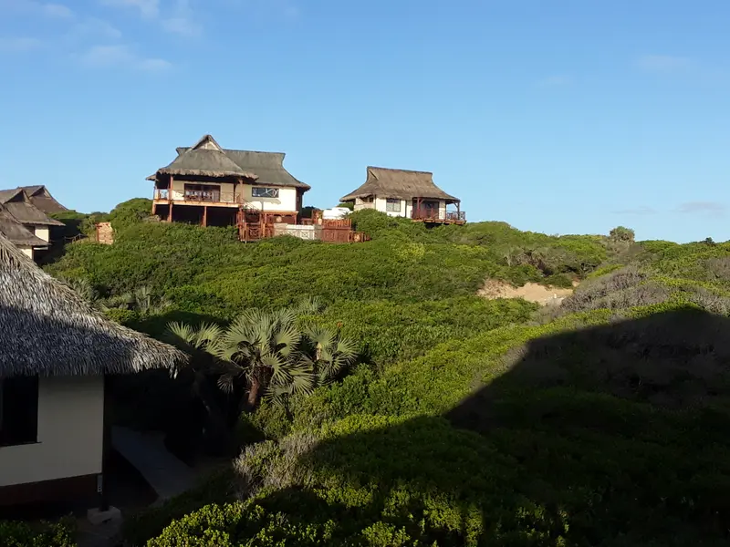
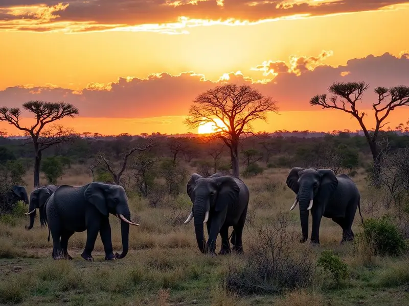
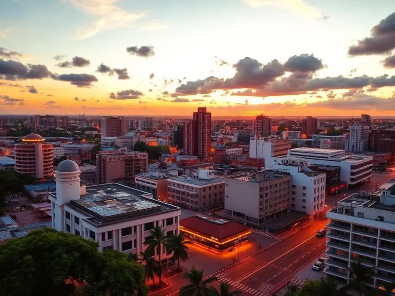
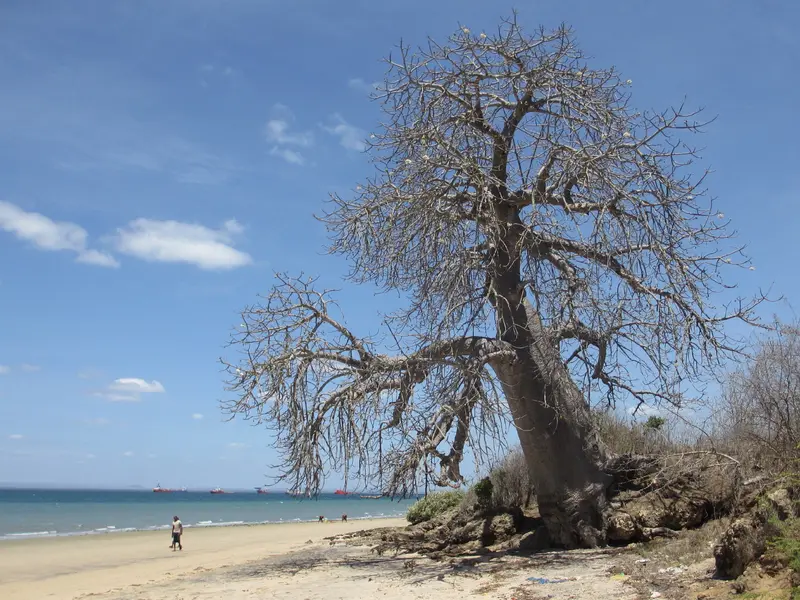

EntrarExplora Moçambique para além da superfície.
Roteiros, atividades e negócios locais de turismo comunitário, com quem vive lá.
Desce para abrir a costa até à Ilha de Moçambique

EntrarRoteiros, atividades e negócios locais de turismo comunitário, com quem vive lá.

Nampula · 3 roteiros

Inhambane · 6 roteiros

Sofala · 2 roteiros

Cidade de Maputo · 4 roteiros

Cabo Delgado · 1 roteiro
Contagens lidas da BD (roteiros públicos aprovados por província).
Alojamento, guia, restaurante ou cooperativa: aparece para quem visita.